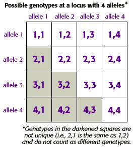

DNA Forensics Problem Set 2
Problem 1: HLA-DQ alpha
A genetic locus that is analyzed in many forensic and paternity testing laboratories is the human leukocyte antigen locus known as HLA-DQ alpha. There are four major alleles at this locus known as 1, 2, 3, and 4. How many different genotypes are possible for these four alleles?
Tutorial
How many genotypes can 4 alleles produce?|
Because loci are located on chromosomes, and we inherit one chromosome from each of our parents, each locus has two alleles. These alleles can recombine from generation to generation to produce different genotypes. You can use a punnett square to determine how many different genotypes 4 alleles at a single locus can produce. The key is to include only different genotypes in your count. For example, the genotypes 4,3 and 3,4 are the same, and should only be counted once. |
 | ||
The general solution to this series is given by:
| |||


The Biology Project
University of Arizona
Tuesday, August 20, 1996
Contact the Development Team
http://www.biology.arizona.edu
All contents copyright © 1996. All rights reserved.